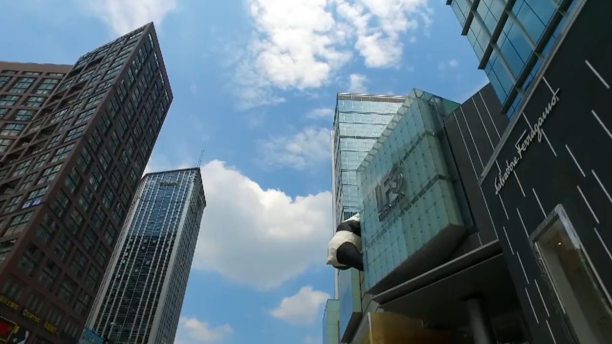

01
KUANZHAI ALLEY
宽窄巷子
青黛砖瓦的清代街巷。宽巷子的闲、窄巷子的静、井巷子的烟火，一步一景。
老成都的街巷肌理
CHENGDU · SICHUAN · CHINA
一座来了，就不想走的城市
A CITY YOU'LL NEVER WANT TO LEAVE
01城市印象IMPRESSION
从金沙的太阳神鸟，到太古里的玻璃幕墙。两千余年城址未移，烟火未断。
城市坐标 成都 · 中国四川省
成都，是一座不需要用力介绍的城市。它的好，藏在清晨第一碗面里，藏在茶馆竹椅的吱呀声里，也藏在每一个不慌不忙的傍晚。
作为四川省省会，成都坐落在沃野千里的成都平原。自公元前五世纪开明王朝建都起，城址两千余年未曾迁移，“天府之国”由此得名。
今天的成都，一边是 IFS 楼顶的熊猫与彻夜不熄的灯火，一边是青城山中的雾与都江堰的水。快与慢、新与旧，在这里从不冲突。
年建城史YEARS OF HISTORY
常住人口RESIDENTS
座博物馆MUSEUMS
国际机场AIRPORTS
成都，是一座把时间煮进茶里的城市。
— 城市手记
FILM城市影像05:34
从宽窄巷子的清晨，到九眼桥的夜色。五分钟，走进一座立体的成都。
02城市地标LANDMARKS
山水与市井只隔一站地铁。在成都，远方和日常可以同一天抵达。
青黛砖瓦的清代街巷。宽巷子的闲、窄巷子的静、井巷子的烟火，一步一景。
老成都的街巷肌理灯笼亮起的夜晚，三国故事与川西民居在一条街上重逢。糖画、皮影、盖碗茶，都是旧时光。
越夜越成都红墙夹道，竹影婆娑。中国唯一的君臣合祀祠庙，纪念刘备与诸葛亮，也纪念一段英雄时代。
红墙竹影竹树掩映的茅屋，是诗圣流寓成都的居所。“窗含西岭千秋雪”，写的就是这里的一段日常。
诗意栖居玻璃幕墙与青瓦坡屋顶比邻，IFS 楼顶的熊猫探出半个身子，是这座城市最萌的坐标。
新旧同框清晨的竹林里，团子们吃笋、打滚、爬树，把“慢”过成了一种生活哲学。看熊猫，请赶早。
和团子说早安两千多年前的水利奇迹，至今仍在灌溉成都平原。一条岷江被温柔分流，也分出了“天府之国”。
仍在工作的古老工程“青城天下幽。”道观藏在苍翠之间，一场山雨就是半日清闲。成都人的周末，常常从这里开始。
山中来客拖动 / 滑动探索01 / 08
03人间风味FLAVOR
“世界美食之都”从不只有辣。麻辣、咸鲜、椒麻、鱼香、糖醋、怪味，二十四种味型才是川菜的底牌。
选择一道菜，尝尝成都的味觉性格
04成都生活LIFESTYLE
茶馆、竹椅、龙门阵。成都人把“浪费时间”变成了一门正经学问。
红油抄手、担担面、肥肠粉。成都人的一天，从一点麻辣开始。
早餐 · 市井清晨是大熊猫最活跃的时候，竹林里全是咀嚼声和翻滚的小身体。
熊猫 · 清晨一杯盖碗茶，一碟瓜子，龙门阵可以摆一下午。时间在这里没有 KPI。
茶馆 · 慢生活红汤翻滚，毛肚七上八下，夜色正式入场。没有什么是一顿火锅解决不了的。
火锅 · 夜宴锣鼓点急，折扇一开一合，掌声与茶香一起落在老戏台。
川剧 · 非遗锦江灯火铺开，酒吧与夜市刚刚热闹。成都的夜，比白天更长。
夜游 · 锦江“成都的慢，不是停滞，
是把生活过得具体。”
CITY SOUNDTRACK 城市夜听
“人有悲欢离合，月有阴晴圆缺，此事古难全。”
05行程灵感JOURNEY
不必赶路。选一条喜欢的节奏，把街巷、熊猫与山水串成自己的成都。
盖碗茶配钟水饺，先学会成都的慢。
青砖黛瓦间散步，顺手买一份蛋烘糕。
竹影红墙，读一首《春夜喜雨》。
红墙竹影之后，等锦里的灯笼亮起。
灯火与晚风，为这一天收尾。
一杯茶开场，再钻进老巷子的烟火里。
红墙竹影与三国故事，傍晚灯笼亮起。
沿锦江散步，看成都的夜慢慢铺开。
赶早看团子吃早餐，十点前最活跃。
在楼顶熊猫下打卡，逛一逛方所与街巷。
老厂房改造的创意园区，工业感与咖啡香。
用一桌小吃结束两天的成都。
从盖碗茶开始，走进老成都的街巷。
一半诗意，一半英雄。
灯笼、川剧与锦江夜色。
清晨的竹林，团子的早餐时间。
在 IFS 熊猫下喝一杯咖啡。
老厂房里的新成都。
看岷江被温柔分流，两千年仍在灌溉。
“青城天下幽”，在山雾里走一段石阶。
带一身山气回城，旅程刚好。
06实用指南GUIDE
两座机场、一张地铁图，和一点面对麻辣的勇气。其余的，交给成都。
成都拥有天府（TFU）与双流（CTU）两座国际机场；高铁直达重庆约 1 小时，西安约 3 小时。
地铁覆盖主要景点，扫码即可乘车。市区骑行友好，短距离不妨扫一辆单车。
3–5 月与 9–11 月最舒适。夏季湿热多雨，冬季阴冷，但茶馆与火锅四季皆宜。
火锅“微辣”也可能超出预期，可以先点鸳鸯锅。茶馆按杯计费，通常可以无限续水。
07成都话LOCAL TALK
不必标准，敢开口就对了。